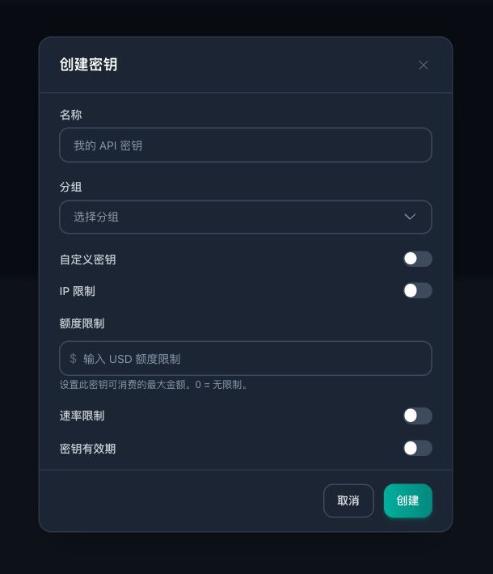
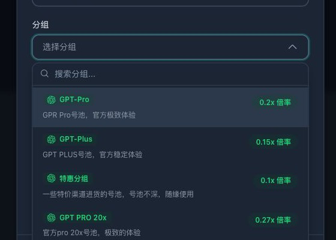
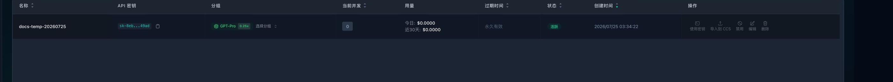
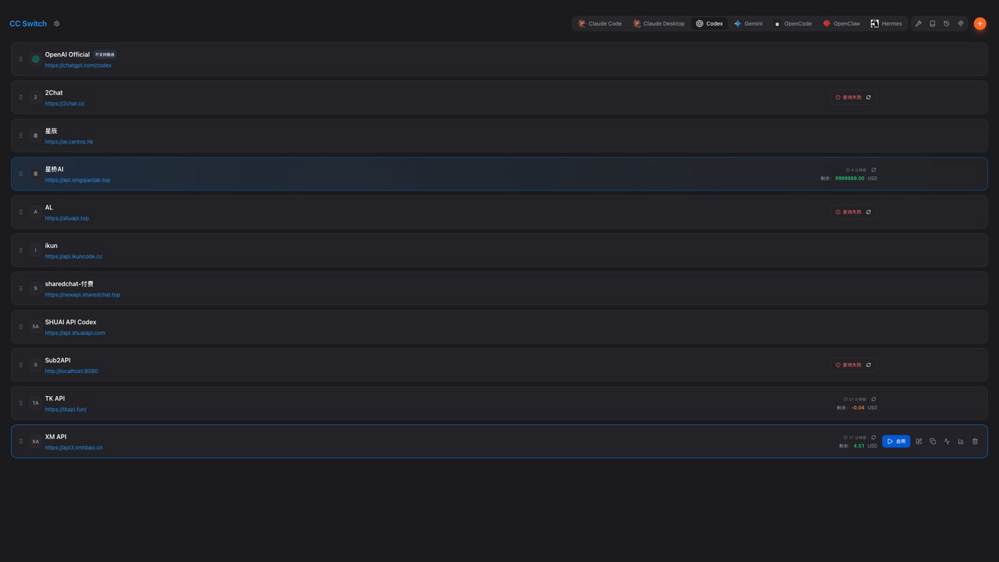
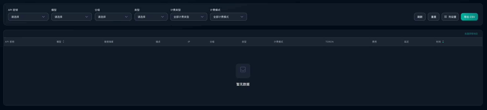

星桥AI 小白使用教程
适合第一次使用 API、Codex 和 CC Switch 的用户。按本文操作，通常 10 分钟左右即可完成充值、创建密钥、导入配置和首次调用。
- 网站：https://api.xingqiaolab.top/
- API 地址：
https://api.xingqiaolab.top/ - 客服 QQ：
1080152144 - 本文更新日期：2026 年 7 月 25 日
开始前先了解
- API 密钥相当于账户密码。 不要发给陌生人，不要放在截图、聊天记录或公开代码仓库中。
- 先小额充值、先小请求测试。 确认配置和扣费正常后再正式使用。
- 倍率、模型、线路和价格可能调整。 以创建密钥时的分组说明，以及每一笔「使用记录」显示的数据为准。
- 本教程以 Codex + CC Switch 为主。已经在使用 Codex 的用户，请先完全退出 Codex，再进行配置。
一、充值并确认余额
登录后，从左侧菜单进入「充值/订阅」或「充值中心」，根据页面提示完成充值。首次使用建议只充值够测试的金额。
充值完成后，页面右上角余额会更新。若支付成功但余额没有变化：
- 刷新页面并等待 1 至 3 分钟。
- 保留订单号和支付截图。
- 联系客服 QQ
1080152144核查。
余额、赠送额度、优惠和退款规则以星桥AI 当前控制台和公告为准。不要根据其他网站的汇率或宣传推算本站余额。
二、安装 Codex
如果电脑还没有安装 Codex，请打开星桥AI推荐的 Codex 安装包网站：
根据网站提示下载并完成安装。首次安装建议先不要启动 Codex；如果 Codex 已经打开，请先完全退出，再继续安装和配置 CC Switch。
安装网站会随 Codex 更新维护下载内容。链接失效或安装过程中遇到问题时，请联系 QQ
1080152144。
三、安装 CC Switch
CC Switch 用于把 Codex 的服务地址和 API 密钥切换到星桥AI。请打开下面的安装说明和安装包入口，下载并完成安装：
安装完成后保持 CC Switch 打开，再回到本文继续操作。
四、创建 API 密钥
打开 API 密钥页面，点击右上角「创建密钥」。

新手建议这样填写：
- 名称：填写容易识别的名称，例如
我的 Codex。 - 分组：根据页面上的稳定性、速度、适用模型和倍率选择。
- 自定义密钥：保持关闭，由系统自动生成更安全。
- IP 限制：第一次使用保持关闭；确认固定出口 IP 后再设置。
- 额度限制：建议先设置一个小额度，避免配置错误造成连续消耗；
0表示不限制。 - 速率限制、有效期：不熟悉时保持默认。

选择分组时不要只看倍率：
- 想先低成本测试，可以选择页面说明中价格较低的通道。
- 更在意速度和稳定性时，选择快速通道或专用通道。
- 某个通道暂时不可用时，可以回到密钥列表切换分组，无需重新打开 Codex。
- 不同请求可能因模型、缓存和调用方式产生不同费用，以使用记录为准。
确认后点击「创建」。密钥创建成功后，只在自己的设备上使用。
五、一键导入 CC Switch
在密钥列表右侧找到刚创建的密钥：
- 点击「导入到 CCS」。
- 浏览器询问是否打开 CC Switch 时，选择允许打开。
- 在 CC Switch 导入窗口中核对名称为
星桥AI、地址为https://api.xingqiaolab.top/、应用为Codex。 - 确认导入或添加，然后点击该提供商的「启用」。

当 CC Switch 中的星桥AI 卡片高亮，并显示「使用中」时，切换完成。

「导入到 CCS」会把当前密钥交给本机 CC Switch。只应在自己的可信设备上执行，不要在网吧、共享电脑或远程陌生设备上导入。
一键导入没有反应怎么办
- 确认 CC Switch 已安装并正在运行。
- 换用 Safari、Chrome 或 Edge 再点击一次「导入到 CCS」。
- 浏览器弹出“是否打开 CC Switch”时选择允许。
- 仍然失败时，在密钥列表点击「使用密钥」，按页面生成的 Codex 配置逐项复制。
手动配置位置
- Windows：
%USERPROFILE%\.codex\config.toml和%USERPROFILE%\.codex\auth.json - macOS / Linux：
~/.codex/config.toml和~/.codex/auth.json
不要照抄其他网站的地址和密钥。最稳妥的方法是点击星桥AI 页面里的「使用密钥」，复制系统为当前密钥生成的最新配置。
六、启动 Codex 并完成首次测试
确认 CC Switch 已显示星桥AI「使用中」后，再启动 Codex。新建一个任务，输入：
你好，请只回复：星桥AI 配置成功
能够正常返回内容，说明配置基本完成。随后回到星桥AI 的「使用记录」页面，确认刚才的请求已经出现。
如果 Codex 仍要求登录官方账户，或请求没有出现在星桥AI 使用记录里，通常表示 CC Switch 尚未启用星桥AI。完全退出 Codex，重新启用星桥AI 后再打开。
七、查看 Token 和扣费
进入 使用记录，可以查看每一次请求的模型、端点、分组、Token、费用、延迟和时间。

阅读一条记录时重点看这些字段：
- 输入 Token：发送给模型的提示词、历史上下文和工具结果。
- 输出 Token：模型生成的回答。
- 缓存 Token：复用上下文时产生的缓存创建或缓存读取用量。
- 倍率：该笔请求记录的分组倍率。
- 原始费用：按照该笔请求的模型用量和价格计算的原始金额。
- 用户扣费：该笔请求最终从账户余额扣除的金额。
将鼠标停在费用旁的信息图标上，可以展开输入费用、输出费用、输入单价、输出单价、缓存读取费用、倍率、原始费用和用户扣费。
页面金额可能经过小数位显示处理，账户余额以系统高精度账本和该笔记录的「用户扣费」为准。
八、常见报错
401、Unauthorized 或 invalid_api_key
- 密钥复制不完整、已禁用或已经删除。
- 回到「API 密钥」确认状态为「活跃」，重新导入 CC Switch。
- 如果密钥曾经发给别人，立即禁用并创建新密钥。
余额不足或无法继续调用
- 检查页面右上角余额。
- 检查密钥是否设置了额度上限，以及额度是否已经用完。
- 充值后刷新星桥AI 和 CC Switch 的余额。
429、请求过多或并发已满
- 等待正在运行的请求结束后再试。
- 不要同时开太多 Codex 任务。
- 必要时切换到页面说明中并发或稳定性更高的分组。
模型不可用或 model not supported
- 先使用星桥AI「使用密钥」页面生成的默认模型配置。
- 不要随意填写网上看到的模型名。
- 切换分组后重新查看该分组当前支持的模型。
超时、长时间没有首字
- 先发送一句简短测试语句，排除上下文过大的问题。
- 在密钥列表切换分组后再试。
- 检查本地网络，关闭可能冲突的代理规则。
- 记录请求时间和报错内容，联系 QQ
1080152144。
九、密钥安全建议
- 一个设备或一个用途使用一个独立密钥，方便排查和停用。
- 给测试密钥设置小额度，正式使用后再调整。
- 不在聊天、截图、视频、直播或 GitHub 中展示完整密钥。
- 怀疑泄露时立即禁用旧密钥，并创建新密钥。
- 定期检查「使用记录」，发现陌生 IP 或异常消费及时处理。
十、完成检查
首次配置结束前，逐项确认：
- 账户余额足够完成小额测试。
- 已创建独立 API 密钥并选择分组。
- CC Switch 中星桥AI 显示「使用中」。
- Codex 能正常回复测试消息。
- 星桥AI「使用记录」中能看到该请求和最终扣费。
- 完整 API 密钥没有发送给任何人。
遇到问题时，请提供报错文字、发生时间、所选分组和使用记录截图；不要提供完整 API 密钥或账户密码。客服 QQ：1080152144。
本文为星桥AI 专属教程。站点功能、线路、模型、倍率和价格可能随服务更新，实际以 星桥AI 当前页面和公告为准。